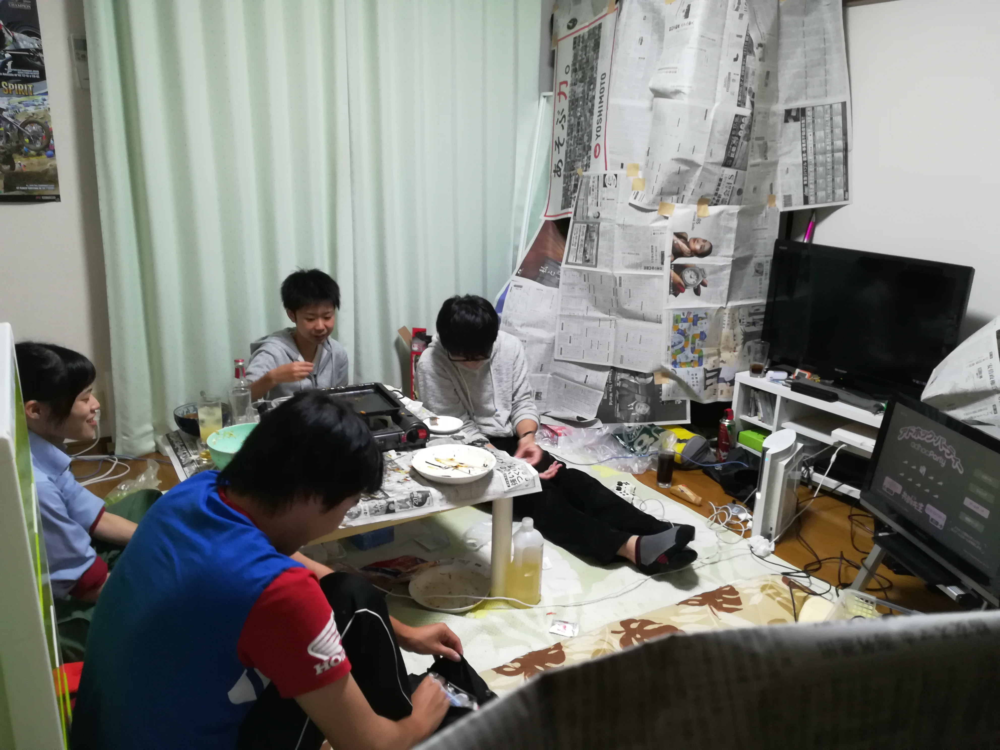
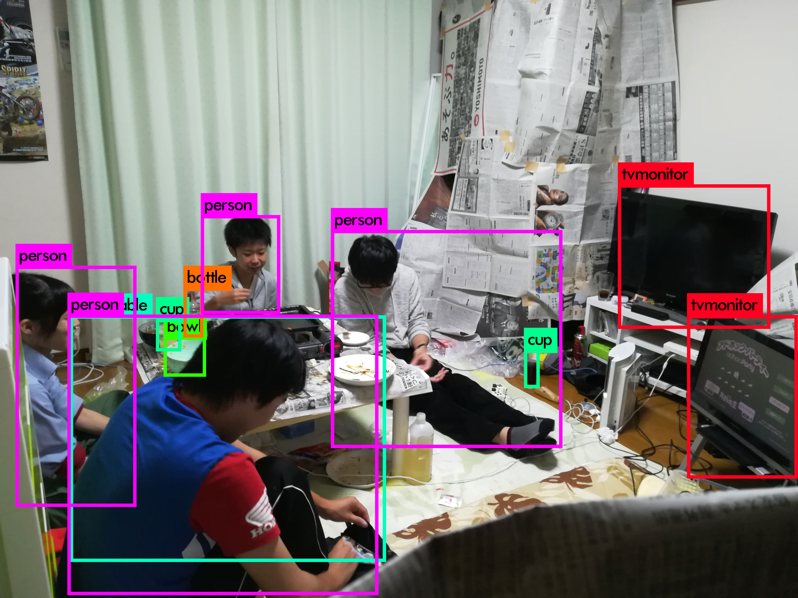

ニューラルネットワークの基礎
*参考：直感Deep Learning Python*Kerasでアイデアを形にするレシピ- パーセプトロン
- 活性化関数 ステップ関数、シグモイド関数、ReLU関数、ソフトマックス関数
- one-hotエンコーディング
- モデルをコンパイルする際のオプション 学習時の重み更新に使用する最適化アルゴリズム
- 損失関数 MSE
- その他用語 精度：ターゲットに対する正しい予測の割合
- 評価関数 損失関数と似ているがこれはモデルの学習には使用されない、モデルの評価のために使用される
- 精度の向上でテクニック 隠れ層の追加：ニューロンとrelu活性化関数を持つ全結合層を追加する（＊層を深くすると精度が上がる？）
- ハイパーパラメータチューニング コスト関数を最小化するための最適なパラメータの組み合わせを探索するプロセス
- 誤差逆伝播法(バックプロパゲーション) 重要な概念、構築したネットワークを微分計算することで逆伝播しながら重みの変更ができるとかなんとか
- バッチ正規化 学習を加速し、一般的に性能を向上させることができる
- モデルの保存と読み込み モデルアーキテクチャの保存や読み込みは以下参照(keras使用)
＊とりあえずAdam使っときゃ大丈夫
損失関数
学習したモデルを評価する
バイナリクロスエントロピー
カテゴリクロスエントロピー...etc
適合率：選択した項目が出れぐらい複数クラスの分類に関連しているかを示す
再現率：複数クラス分類において、特定のクラスに関する精度を示す
＊これらをTensorBoardで確認できる エポック：モデルが学習データセットに対して学習した回数。学習ごとに最適化アルゴリズムは損失関数の値を最小化するように重みを調整する バッチサイズ：最適化アルゴリズムが重みを更新する際に、データをいくつ使用するかを表す。
ドロップアウト：全結合層で伝播する値を確率的に伝播させないようにする操作。機械学習でよく使われる正則化（過学習を避ける）と同じ効果が期待できる。（らしい）
よくわからない、後で調べる（学習でここが結構効いてくるやつだった希ガス）
# JSON形式で保存 json_string = model.to_json() # YAML形式で保存 yaml_string = model.to_yaml() from keras.models import model_from_json # JSONからのモデル再構築 model = model_from_json(json_string) # YAMLからのモデル再構築 model = model_from_yaml(yaml_string)モデルパラメータ(重み)の保存や読み込みは、以下参照
from keras.models import load_model
# HDF5形式のファイル'my_model.h5'を作成
model.save('my_model.h5')
# モデルの削除
del model
# モデルの読み込み
model = load_model('my_model.h5')
※コールバックは複数指定可能(list形式でfit関数に渡すらしい)
詳しくはhttps://keras.io/callbacks/を参照
EarlyStoppingコールバックを用いると、評価関数の値が改善されなくなった時に学習を停止できる
keras.callbacks.EarlyStopping(monitor='val_loss', min_delta=0, patience=0, verbose=0, mode='auto')損失履歴は、以下のようなコールバックを定義することで保存できる
class LossHistory(keras.callbacks.Callback):
def on_train_begin(self, logs={}):
self.losses = []
def on_batch_end(self, batch, logs={}):
self.losses.append(logs.get('loss'))
model = Sequential()
model.add(Dense(10, imput_dim=784, init='uniform'))
model.add(Activation('softmax'))
model.compile(loss='categorical_crossentropy', optimizer='rmsprop')
history = LossHistory()
model.fit(X_train, Y_train, batch_size=128, nb_epoch=20, verbose=0, callbacks=[history])
print(history.losses)
→障害発生時に最後に保存された状態からの復帰が可能
(学習では、状態=モデルの重み)
コマンドラインでTensorBoardを起動すると、保存されたデータを可視化できる
$ tensorboard --logdir=/full_path_to_your_logs
test // test
強化学習
ゲームAIを作ろう
- これから随時更新予定
教師あり学習
YOLOv3
学習済みのモデルをダウンロードして使ってみただけだけどすごいね

